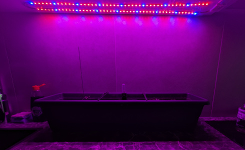
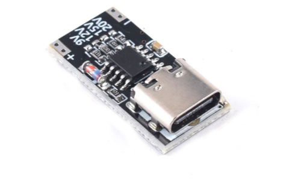
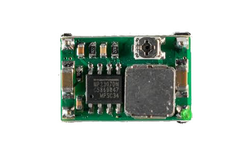
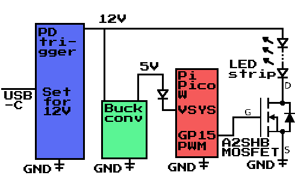
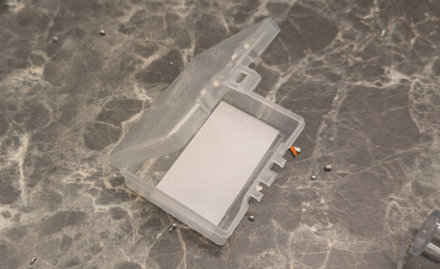
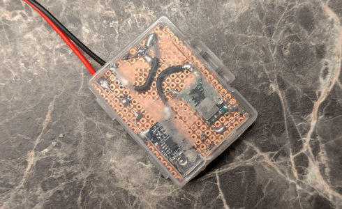
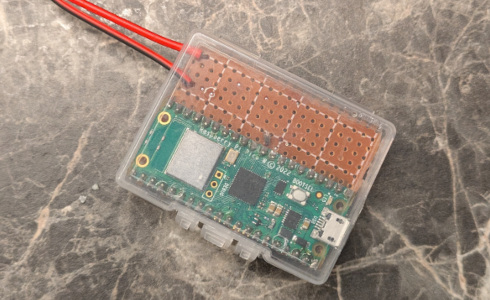
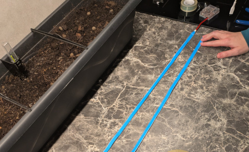
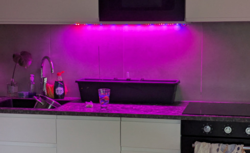
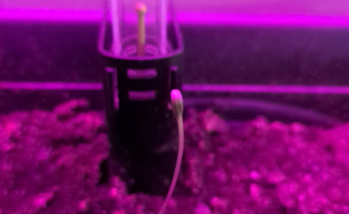

Summerlight — Pico W
Summary
Summerlight is a simple, robust light controller that makes indoor plants and rooms feel like a summer day. A Raspberry Pi Pico W modulates LED strips over the day using a smooth sine curve (06:00 → 20:30, peak at midday), keeping time via daily NTP sync and running off a monotonic clock between syncs.

Power and Control
The power path is intentionally straightforward, reliable, and safe:
USB-C PD trigger @ 12 V → directly supplies the LED strips and the step-down (buck).

Buck converter → 5 V rail to the Raspberry Pi Pico W through a series diode.

Schematic
Functional overview of the wiring:
- USB-C PD trigger negotiates 12 V.
- 12 V splits: one branch to the LED strips (through a MOSFET on the low side), one to the buck.
- Buck → 5 V → series diode → Pico W 5 V input (protects against back-feeding during USB programming).
- GP15 PWM on the Pico W drives the MOSFET gate to dim the strips.
- Common ground across PD trigger, buck, Pico, MOSFET, and LED strips.

Board and Enclosure
A small plastic box for electronic parts was used as the enclosure. It was the perfect size—the Raspberry Pi Pico W fits snugly inside.

The parts were soldered on a small perfboard that was measured to fit the enclosure.

The board was left to float in the case; the fit was good enough that the parts did not rattle. This approach also makes it easier to work on in the future.

Code
Firmware is in main.py and can be found on my GitHub page here. Key points:
- Daily NTP sync (Adafruit pool). Between syncs, time advances via time.monotonic() (no drift from sleeps).
- EU DST handled locally: last Sunday in March @ 01:00 UTC → last Sunday in October @ 01:00 UTC.
- Summer curve: sine brightness from 06:00 → 20:30 (0 at edges, 1 at midday); optional gamma (default 2.2).
- Single PWM channel on GP15 at 1 kHz to the MOSFET gate.
- Wi-Fi creds via
CIRCUITPY_WIFI_SSID/CIRCUITPY_WIFI_PASSWORD; timezone viaTIMEZONE(defaults to CET/CEST).
Install
1.4 meters of LED strip were used, with a total of 96 5050 LEDs. They were attached with wide transparent tape to the underside of the cupboards. The strip has its own adhesive, but it wasn't sufficient for a very smooth surface.

The electronics sit neatly in a small case with strain relief on power lines. The controller drives LED strips mounted near the planter to provide pleasant ambient light across the day.

Before long, the first plants started rising from the soil. The growth rate was noticeably higher.

Notes
- Keep grounds short and solid; LED return flows through the MOSFET—route accordingly.
- Do not omit the series diode on the Pico’s 5 V line; it prevents back-feeding the rest of the circuit when you plug USB into the Pico for flashing.